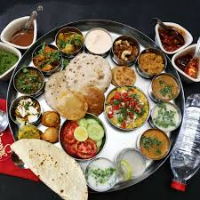

Puranpoli thali is a Holi special recipe. Puranpoli is a traditional Maharashtiran delicacy. This is Holi special recipe but it is also made on many auspicious occasions too. Puranpoli thali is a multistep process. It takes a lot of time. Today we will see all these process step by step. I am trying to quicken up the whole process and we are not blending the puran in puranpoli recipe. You can try this recipe at home.
Puranpoli, Katachi Amti, Potato sabzi, Cabbage pakoda, Milk with Ghee, Rice